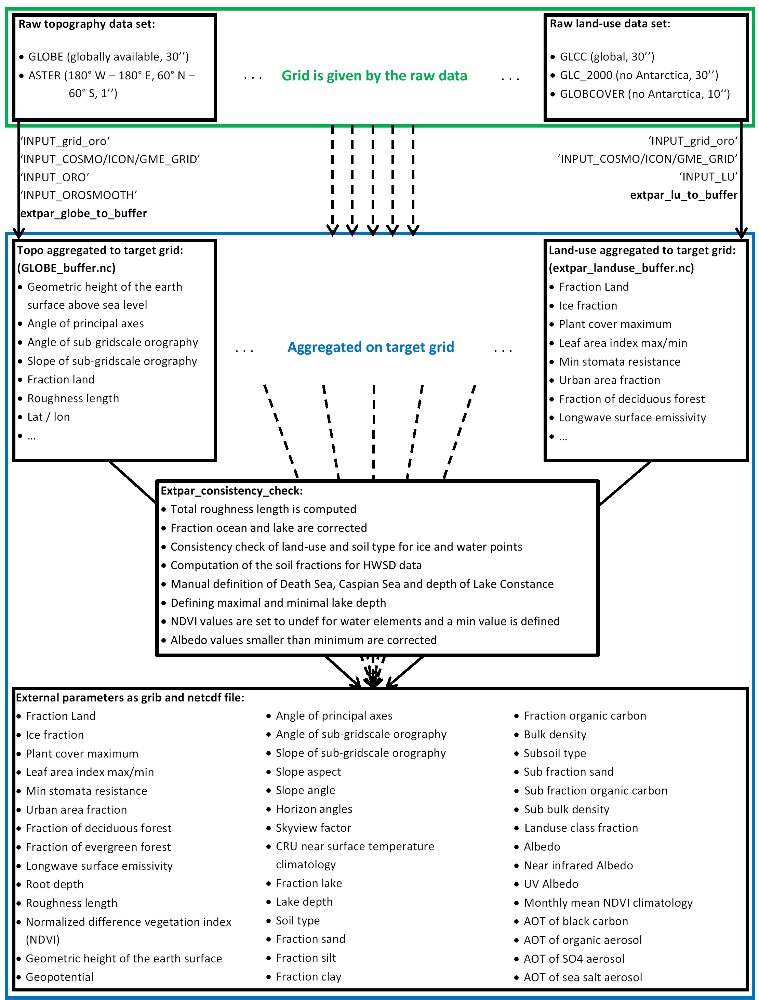

Software Modules¶
Overview¶
The software EXTPAR is composed of thirteen autonomous programmes.
Twelve programmes are responsible for aggregating a raw data to the
target grid, which is specified by the user. The thirteenth program, the
consistency check, is performed in the end. The executables are called
extpar_*_to_buffer, whereas the star * stands for ahf
(anthropogenic heat flux), aot (aerosol optical thickness), cru
(temperature climatology of the Climate Research Unit (CRU)), landuse,
topo, ndvi (normalized difference vegetation index), soil, flake
(fraction lake), isa (impervious surface area), albedo, art (Aerosol and Reactive
Trace gases), emiss (emissivity) and era (ERA climatologies) respectively.
In Fig. 1 a schematic representation of EXTPAR is
drawn. For the sake of clarity only the topography and land-use path is
shown. The same can be applied for the other ten raw data sets. For all
these programs there exist namelists. Most of the namelists only contain
the name and path of the raw data file and the name of the buffer file,
which is later used for the consistency check, and the name of the
output of the final external variables.
The software modules read from the following namelist files:
- INPUT_AOT
- INPUT_LU
- INPUT_ORO, INPUT_OROSMOOTH, INPUT_RADTOPO, INPUT_SCALE_SEP
- INPUT_SOIL
- INPUT_ART
- INPUT_FLAKE
- INPUT_grid_org
- INPUT_COSMO_GRID or INPUT_ICON_GRID
- namelist.py
The namelists INPUT_grid_org and either INPUT_COSMO_GRID or
INPUT_ICON_GRID are used in all the programs, as they contain the
general information of the target grid to which the raw data should be
aggregated. The namelist file namelist.py is read by all Python
programmes.

Hybrid Python-CDO Structure¶
For three of the external parameters calculated by EXTPAR, namely albedo, NDVI, and the Hadley CRU climatologies, problems appeared with target resolutions much higher than the provided input data set resolutions. The problem is that not all target grid points get assigned a proper value when using the legacy Fortan code and interpolation method.
The algorithm used in the legacy Fortran modules aggregates source grid point values onto the target grid where the input data is finer than the target grid and uses bi-linear interpolation to fill the remaining grid points where the input data is sparser than the target grid. However, starting from a 5 km global resolution for the target grid, points can potentially get assigned unreasonable values because of the insufficiency of the bi-linear interpolation algorithm.
To resolve this issue, for EXTPAR Version 5.4 a rewrite of those Fortran modules in Python, using the more sophisticated interpolation methods from CDO with support for all grids was conducted. Because the interpolation methods implemented in CDO are faster than those in Fortran for large model grids, emiss_to_buffer is written in Python as well. A rewrite in Python only makes sense for Fortran modules that do simple calculations with the data. These calculations can easily be substituted with CDO-commands in the Python modules. For modules doing complex calculations and providing many namelist parameters the user can define, like extpar_topo_to_buffer or extpar_landuse_to_buffer, a rewrite in Python is not planned.
The interpolation algorithms selected are:
- albedo distance-weighted average remapping
- NDVI first order conservative remapping
- EDGAR first order conservative remapping
- CDNC first order conservative remapping
- CRU climatology distance-weighted average remapping
- emissivity first order conservative remapping
- ERA climatology first order conservative remapping
- AHF/ISA bilinear interpolation
The description of the used algorithms can be found via the CDO documentation.
Summary¶
The external parameters can be generated by using thirteen programs to aggregate the various raw datasets to the target grid and after this by calling the final program for the important consistency check.
-
In a first step, the target grid and other parameters have to be specified by the user in the runscript (see section Grid Definition for the details).
-
Then the aggregation of the raw datasets listed in Table 1 to the given target grid can be performed by calling following executables
extpar_aot_to_bufferextpar_cru_to_bufferextpar_landuse_to_bufferextpar_topo_to_bufferextpar_ndvi_to_bufferextpar_soil_to_bufferextpar_flake_to_bufferextpar_alb_to_bufferextpar_isa_to_bufferextpar_ahf_to_bufferextpar_emiss_to_bufferextpar_art_to_bufferextpar_era_to_bufferextpar_edgar_to_buffer
These programs generate intermediate NetCDF files ("buffer") with the aggregated data.
-
The executable
extpar_consistency_checkreads in the buffer-files, performs an automated consistency check, and finally generates the output fields listed in Table 2.
The task of the consistency check that is performed at the end is to find inconsistencies in the soil data, the lake data and the NDVI data. In the soil data problems may appear between the soil type and the land-use, in particular for water and ice grid elements. For the fraction lake, minimal and maximal lake depth must be introduced and some seas such as the Caspian and the Dead Sea as well as Lake Constance must be defined manually. For more information see chapter 3.7.